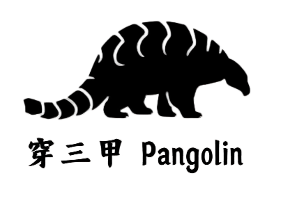

放我读过的书、正在读的书，以及那些还没写完整、但已经开始在脑子里发酵的笔记。
先放一个读书卡片位置。后面可以慢慢补：人物线、命运感、佛性、江湖秩序，或者单纯记录某一章读完后的感觉。
无人不冤，有情皆孽。
乔峰、段誉、虚竹三条线，可以先拆成命运、身份和选择。
把读到时停顿的句子放在这里，之后再整理成完整笔记。
比如“侠义”和“执念”的边界，后面可以慢慢写。
先占位：人物、命运、佛性和江湖秩序，后面慢慢补读书笔记。
这个位置可以写一篇人物读后感，不急着完整，先留结构。
放原文摘句、页码、章节和当时的感受。
可以写成一篇关于执念、因果和悲悯的短笔记。
后面你告诉我书名、作者、状态，我就按这个卡片结构填进去。
这里可以放你的读书习惯、标注方式、复盘方法。
长篇、人物、命运感和读完之后还会回来的段落。
把人物线拆开，看选择、性格、身份和命运。
句子、页码、章节和读到那一刻的反应。
还没开始，但已经想给它留一个位置的书。